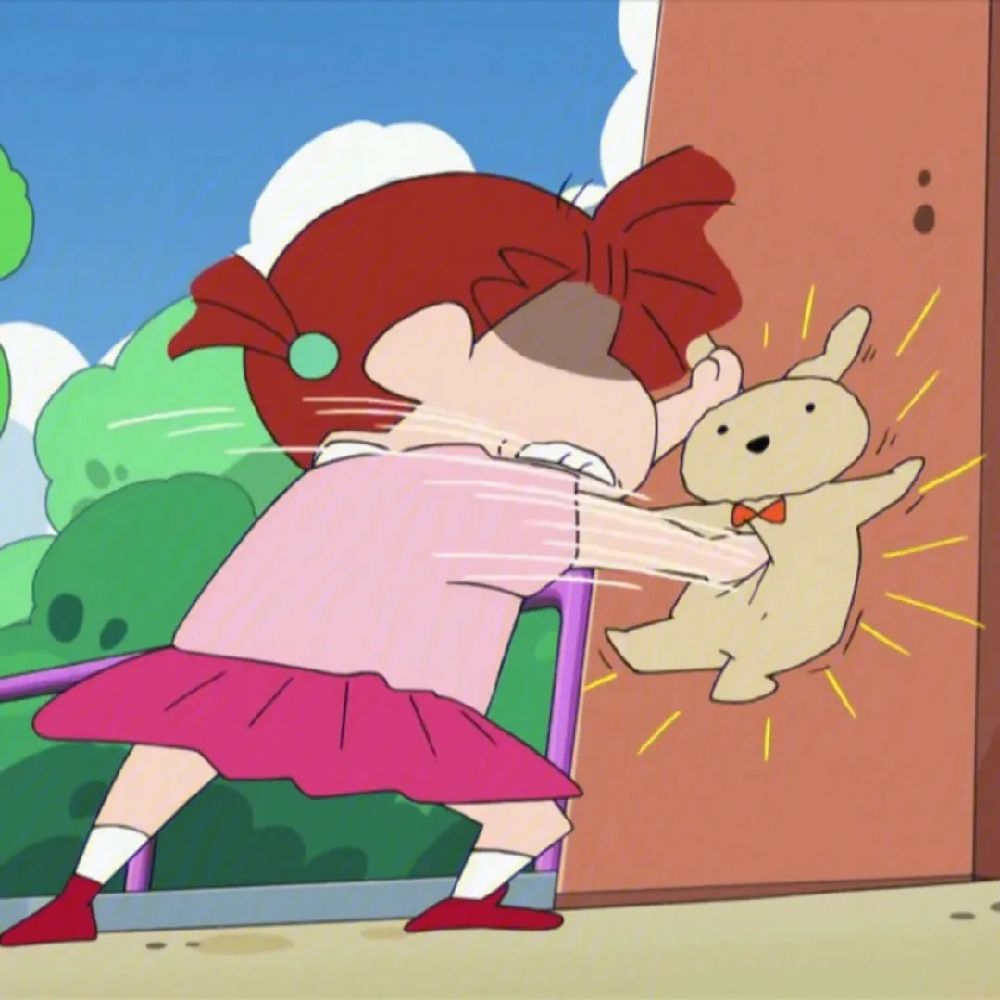
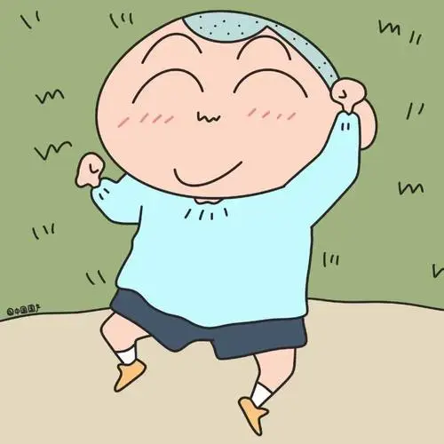
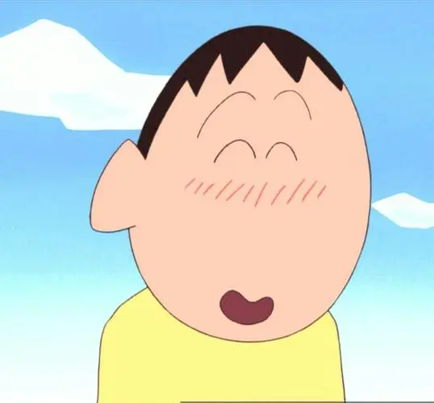
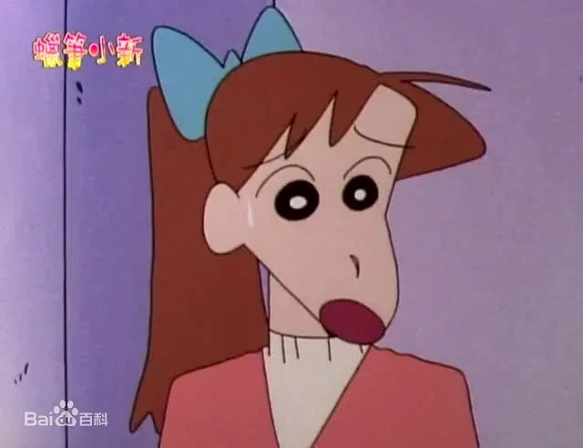
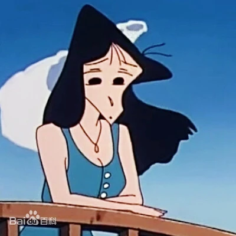
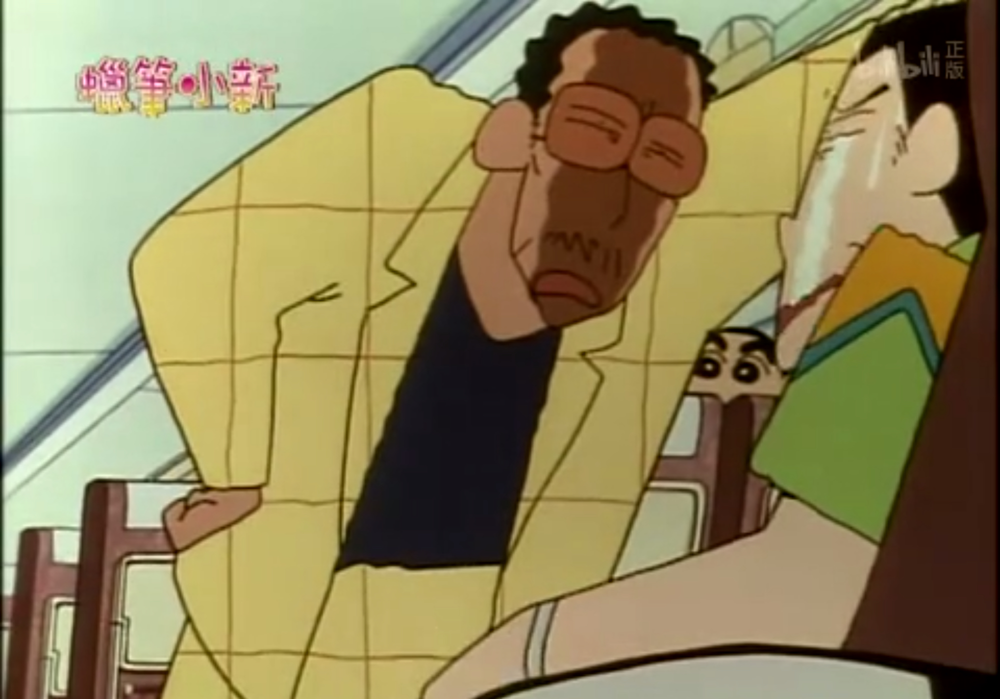

| 小新的朋友们 |
风间彻：双叶幼稚园学生。 个人着装的颜色通常是蓝色，常穿一件橘色的短裤，还有一双深蓝色的鞋子。 优点：很有品味，有礼貌，有责任心、有理想，无论什么事都很认真，关心同学和父母，做事认真有条理，绅士，对女生很温柔、有风度。 喜欢的事情：和春日部防卫队的几个好友一起玩、踢足球、和小白散步、收集玛丽或可爱P有关的东西等。 |
|
|  | 妮妮：双叶幼稚园的学生。 常要求春日部防卫队队员一起玩“超真实扮家家酒”，酢乙女爱的天敌。生气时经常拿兔子布偶来出气。在超真实扮家家酒中，通常饰演“美丽的妻子”。 性格：性格随心所欲、大大咧咧，且非常坦率。 优点：勇敢、胆子大； 缺点：脾气暴躁、没耐心、霸道强势、喜欢强迫人、腹黑、戏精； |
|  | 正男：双叶幼稚园的学生。 个性胆小且很听话，疑似有双重人格。 迷恋酢乙女爱，做事经常落后。遇到困难或较恐怖的东西，哭的第一个就是他，但不小心反击时就会变成另种个性，喜欢看动感超人。 在妮妮的“超真实扮家家酒”中，通常饰演懦弱且不上进的丈夫，且一定有与妮妮离婚或离家出走的情节。 |
|  | 阿呆（阿呆也叫鼻涕星人（小新语））：双叶幼稚园的学生。 总是流鼻涕，但是他的鼻涕非常特别。嗜好是收集各种石头和观察身边周围的东西，深藏不露，有诗意，有丰富的知识。 正如名字，阿呆口头禅是“呆～（ボー）”。 特点：呆，有哲学家气质、沉默寡言、深藏不露。 爱好：喜欢收集各式各样的石头、动感超人、康达姆机器人。 害怕的事：樱田妮妮的超真实扮家家酒。 |
| 小新的老师们 |
|  | 石坂绿（小新的任课老师）：石坂绿是双叶幼稚园向日葵班的老师，也叫吉永老师。 心地善良，是一个非常负责任并且有耐心的好老师。隔壁玫瑰班老师松坂梅总是向她抬杠叫板，偏要和她拼个高下，但其实很关心对方。 发型：棕色头发，头发上有一个蓝绿色的蝴蝶结，习惯将头发绑成单马尾 身材：较瘦（松坂老师说的） 最高兴的事：和石坂先生约会、到幼稚园给同学们上课
|
|  | 松阪梅：双叶幼稚园玫瑰班的教师，也叫松阪老师。 喜欢名贵服饰和帅哥，相亲数次都以失败告终，爱慕德郎医生。 出身于乡下地区，但因为爱慕虚荣且好面子的性格作祟。 最喜欢的事：谈恋爱、遇见帅哥、和吉永绿吵架、买名牌服饰和首饰 最害怕的事：约会或逛街的路上遇见野原新之助、失恋 最高兴的事：找到男朋友、有钱、能买上高级貂皮大衣、买名牌、不用再住那种寒酸的公寓……
|
上尾真澄：双叶幼稚园樱花班老师，也叫上尾老师。 带上眼镜时：平常习惯戴着眼镜，性格略显阴暗，胆小懦弱且不敢大声说话，还患有严重的恐高症。 摘下眼镜时：会因为无法看清周遭人事物，个性变得爽朗直率且容易冲动，更能坦白大声说话，表现出她的双重人格并说出自己的真心话。 爱好：上尾非常擅长电脑，一坐在电脑面前立马就像变了一个人。 最喜欢的食物：各种甜甜圈，吃汤泡饭。 。曾亲眼看到过酢乙女爱的保镖黑矶先生的真面目，让她动了心，暗恋黑矶，两人处于比较好的一面。 |
|
|  | 高仓文太（黑道老大（小新语））：双叶幼稚园的园长。 因为相貌可怕常被小新调侃为黑道老大，有时甚至吓坏陌生的小朋友，实则心地善良，常常收养在外流浪的小动物。 非常喜欢孩子，曾为了不让幼稚园期待捣麻薯的孩子们失望而拼命跑超市米店买糯米，虽然最终因长相可怕被警察带走问话没买到。常常因为长相被警察带走，但确实是个温柔负责的园长先生。 |